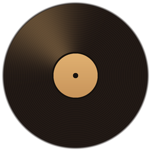
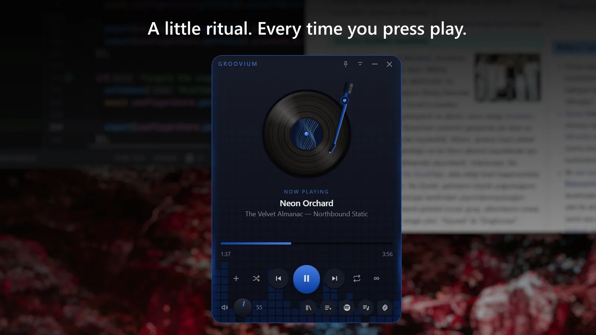
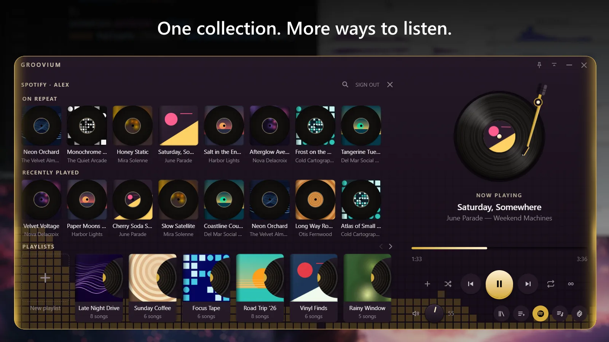
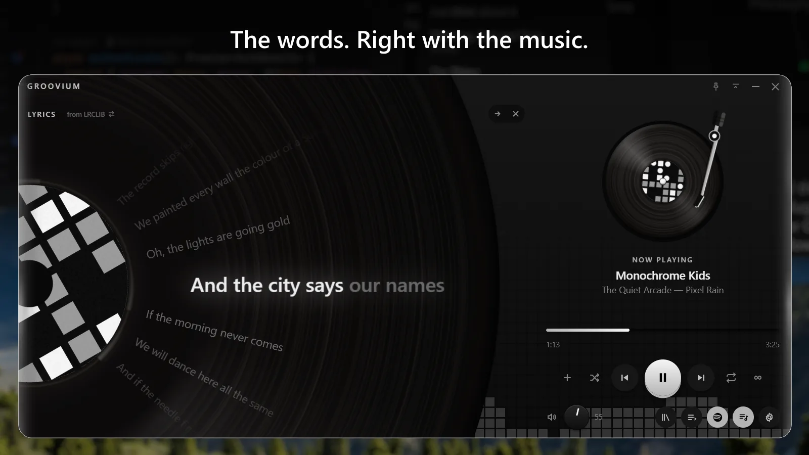

Infinite play
The last track doesn't have to be the last. Let something similar follow your collection, found through Last.fm, from your own library first.
English · Türkçe

The music you love. A new way to feel it.
Groovium brings the ritual of vinyl to your desktop. Your local library and Spotify, together on a turntable made for today.
Free and open source · Windows 10 and 11 · English and Turkish

A spinning record, a moving tonearm, and music within reach. Lift the record and set it down again. Make listening a little more hands-on.

Your local favourites and Spotify tracks, together in Groovium playlists. Bring your music, choose a track, and settle in. Spotify Premium and setup required.

Follow the words beneath the record or open them in the drawer. When timed lyrics are available, each line lights up as it is sung. Select a line to return to that moment.
Screenshots use fictional music, artwork and lyrics for demonstration.
Everything a desktop music player should do, in a widget that stays out of your way.
The last track doesn't have to be the last. Let something similar follow your collection, found through Last.fm, from your own library first.
Choose a palette, make one from your own colours, or let the album cover set the mood for the whole window.
Keep it on top, collapse it to its controls, and use your media keys without leaving what you are doing. A tray icon and in-app updates included.
No Groovium account, no analytics, no telemetry. Local audio files are never uploaded anywhere.